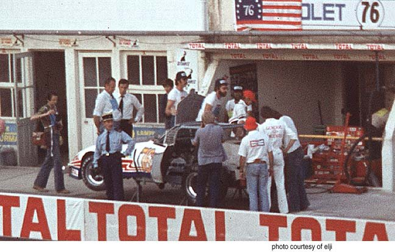
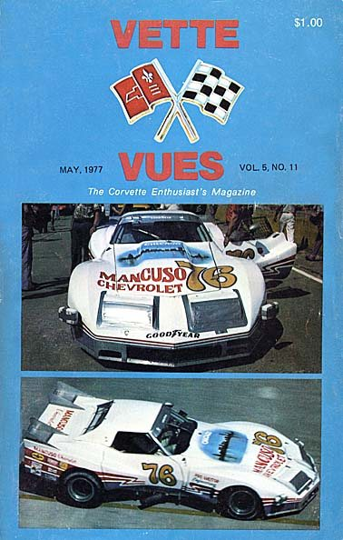

Four generations of the Mancuso family in the automobile business, since 1923.
Le Mans · 12–13 June 1976Greenwood Corvette, “Spirit of Le Mans 76”
A family business, four generations deep.
1923Benjamin MancusoFounds the family automobile business in Batavia, New York.
1953Jim MancusoEstablishes Mancuso Chevrolet in Skokie, Illinois.
1972Rick MancusoTakes the green flag in a 1958 Corvette, B-Production. Later president and CEO of Lake Forest Sports Cars.
2005Adam MancusoRaces Lola Sports 2000s alongside his father in SCCA competition.
Mancuso Chevrolet letterhead4700 Golf Rd., Skokie · signed Rick Mancuso · undated
“You’re no longer just a car guy, you’re a Mancuso.”
“OK Used Cars”, Mancuso ChevroletDate and place not recorded
Sources: Fra Noi, “Andrettis’ heirs”, Feb 2005 · Ward’s Dealer Business, Mar 2001
HistoryChapter 01
1976. The Bicentennial Year.
An invitation from France, a Corvette on the Mulsanne Straight, and a Chicago dealership’s own colours.
1976
France asks for an American legend.
To mark America’s bicentennial, the French government invited Mancuso and his team to race a Corvette at the 24 Hours of Le Mans.
Business commitments kept Rick Mancuso at home. He turned the Greenwood wide-body IMSA Corvette over to his teammates.

Le Mans, 1976 · the pit garagePhoto courtesy of eljiWindow: John Greenwood · Bernard DarnicheRear quarter: Mancuso Chevrolet · Photo courtesy of Albert Lamberts
218mph
June 1976
218 mph. The fastest entry on the course.
Fra Noi records that on the long Mulsanne Straight the Greenwood Corvette reached 218 mph, the fastest entry on the course.
“Spirit of Le Mans 76”Photographer not recordedLe Mans, 1976Photo courtesy of Albert LambertsLe Maine Libre · Sat 12 – Sun 13 June 1976Front page, race weekend
Hour 8
Out in the eighth hour.
A fuel malfunction put the Corvette out of the race. The team did not win. But, as Fra Noi later wrote, it made a favourable impression while the car lasted.
Le Mans, 1976Photo courtesy of Albert Lamberts
1976 · Mancuso #76
In Mancuso Chevrolet colours.
Mancuso Chevrolet #76Date and venue not recorded
Fra Noi also records that in 1976, at Sebring, Rick’s Corvette became the first to break 200 mph on each lap of the long back straight.
Revell’s model-kit notes describe the #76 as the first “customer” car John Greenwood built for a client, Rick Mancuso, raced with the dealership as sponsor and a Chicago skyline painted on the hood.
Mancuso · Fyhrie · GreenwoodPhoto courtesy of Buzz Fyhrie

Vette Vues · May 1977Cover
An automotive family since 1923.
1923Benjamin
1953Jim
1972Rick
2005Adam
NextThe GT
GT photographyTo be supplied by Mancuso
Next chapterLaunching soon
The GT.
A tribute to the iconic Chevrolet Corvette: the authenticity and style of original Corvettes, with modern comfort and driveability. Only by Mancuso.
Tribute to
The Chevrolet Corvette
Character
The style and authenticity of original Corvettes; modern comfort and driveability